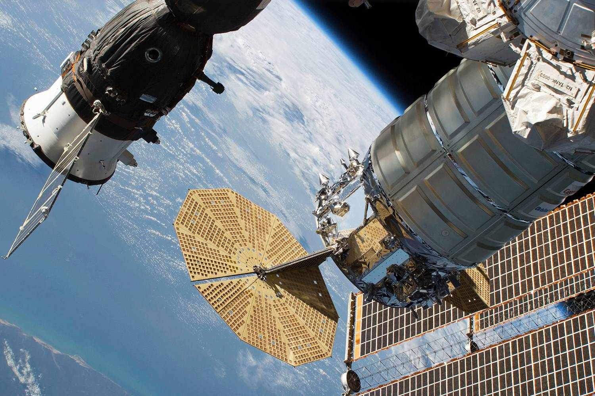

50 anos depois

Em janeiro de 2019, a China se tornou o primeiro país a aterrissar uma sonda no polo sul da Lua, despertando
reações quase que imediatas na política espacial mundial, principalmente dos Estados Unidos. Com o interesse
cada vez maior de outras potências – Rússia, Índia e Japão – em explorar o cosmos, na Terra inicia-se uma nova
corrida espacial.
Nos últimos 50 anos, o mundo viveu na era da Apollo 11, a missão americana que levou os primeiros homens ao
satélite da Terra e que completa meio século neste sábado, 20. Mas, desde que Pequim chegou ao lado da Lua em
que nenhum outro ser humano havia pisado, o jogo virou.
Em resposta à conquista do país asiático, o governo americano definiu em março deste ano os novos rumos de sua
política no espaço e deixou claro que não pretende deixar o caminho livre para chineses ou russos. “Não se
enganem, estamos em uma corrida espacial hoje, assim como estávamos na década de 1960, e os riscos agora são
ainda maiores”, disse o vice-presidente Mike Pence, em referência à batalha travada entre a União Soviética
(URSS) e os Estados Unidos durante os anos da Guerra Fria.
“A China se tornou a primeira nação a aterrissar no polo sul da Lua e revelou sua ambição de conquistar o
terreno estratégico lunar e se tornar a nação espacial mais proeminente do mundo”, alertou Pence. “E a Rússia
tem cobrado dos Estados Unidos mais de 80 milhões de dólares por assento toda vez que um astronauta americano
viaja para a Estação Espacial Internacional (ISS)”, indignou-se.
Os americanos aposentaram sua frota de ônibus espaciais em 2011 e, atualmente, a única espaçonave ativa capaz
de transportar astronautas para a ISS é a russa Soyuz, inaugurada em 1967.
Pence é o responsável na Casa Branca pela política espacial e colocou como meta para seu país levar novamente
astronautas americanos à Lua até 2024. Em seu programa Artemis, a Nasa também pretende estabelecer uma base no
satélite natural da Terra por volta de 2028.
Apesar da largada tardia na corrida pelo espaço e dos altos investimentos feitos pelos Estados Unidos em seus
programas, os chineses parecem estar liderando a nova maratona. O país realizou mais lançamentos para o espaço
do que qualquer outra nação em 2018.
A missão Chang’e 4 chegou ao polo sul lunar e abriu os olhos do mundo para a ambição chinesa de se tornar a
maior potência espacial. Até agora, Pequim não deu indicações de que pretenda desacelerar. A expedição Chang’e
5 para a Lua já está programada para acontecer até o final de 2019, com planos de colher amostras que
auxiliarão seus futuros projetos de estabelecer uma presença permanente na superfície lunar.
Além de levar homens para o satélite onde só os americanos pisaram, a Administração Espacial Nacional da China
(CNSA) tem planos cada vez mais concretos de explorar economicamente o espaço por meio da mineração, da
geração de energia solar em estações na órbita da Terra e da modernização de seus equipamentos militares. O
cronograma traçado prevê ainda o estabelecimento de uma base de pesquisa no polo sul da Lua nos próximos dez
anos e o envio a Marte de duas sondas até 2030 para determinar a existência de água congelada e realizar
pesquisas.
Há mais de 17 anos, em 2002, o cientista-chefe do programa lunar chinês, Ouyang Ziyuan, comprovou o interesse
de seu país na geração de energia e recursos por meio da exploração lunar. “Quem conquistar primeiro a Lua se
beneficiará primeiro”, disse Ouyang.
Outros competidores

China, Estados Unidos e Rússia não são os únicos nessa corrida. União Europeia (UE), Índia, Japão, Coreia do
Sul e Israel também têm grandes interesses no desenvolvimento de tecnologia espacial e em se beneficiar do que
a Lua pode oferecer aos seres humanos.
Para além de Estados, a corrida no século XXI se tornou ainda mais competitiva com a entrada de companhias
privadas no páreo. Elon Musk, fundador da Space X, afirmou que pode aterrissar na Lua em até dois anos e, em
2030, quer construir uma cidade que possa abrigar até 1 milhão de pessoas.
Para John Logsdon, professor emérito e fundador do Instituto de Política Espacial da Universidade George
Washington, a complexidade do cenário atual é um dos principais fatores que diferenciam as novas ambições da
corrida espacial que se iniciou há mais de 60 anos entre americanos e soviéticos e que levou aos primeiros
passos de Neil Armstrong na Lua, em 1969.
“A URSS definiu suas conquistas espaciais como uma indicação de sua superioridade, e os americanos
responderam a esse desafio”, diz o historiador. “Hoje, não é tão claramente competitivo como antes, quando
havia um objetivo incontestável de chegar à Lua primeiro e dois polos brigando por ele”.
Atualmente, os Estados Unidos ainda cultivam relações instáveis e cheias de velhas divergências com a Rússia,
acentuadas após a anexação da Crimeia por Moscou e as denúncias de interferência de Moscou na eleição
presidencial americana de 2016. Washington também se envolveu em uma guerra comercial com Pequim e restringiu
os negócios da gigante Huawei. Ao mesmo tempo, China e Índia conservam uma complexa agenda bilateral, com
disputas territoriais e provocações no passado e convergências mais recentes no plano econômico.
As rivalidades bilaterais e globais manifestam-se também por meio de uma nova corrida espacial, mas não de
maneira tão contundente como durante a Guerra Fria. “Atualmente, há mais do que uma competição entre alguns
Estados. Há uma enorme aceleração de toda atividade humana no espaço, que é multissetorial”, diz Christopher
Newman, professor de política e direito espacial da Universidade de Northumbria, na Inglaterra.
Para Logsdon, apesar das ambições econômicas e geopolíticas de muitas nações, apenas os americanos e os
chineses têm os recursos humanos e financeiros necessários para grandes projetos espaciais.
Militarização do espaço

O mundo não está preocupado somente com a liderança da China na nova corrida pelo espaço, mas também com o que
a potência oriental pode fazer com as novas tecnologias desenvolvidas. Como as forças militares de Pequim
controlam a maior parte dos programas espaciais, há grande apreensão de que seu objetivo seja, na verdade,
usar seus modernos sistemas de lançamentos para reunir informações sobre seus adversários ou para bloquear
qualquer tentativa de outros países de fazer o mesmo.
“Na minha opinião, os Estados Unidos estão mais preocupados com as ameaças militares espaciais de Pequim do
que com astronautas chineses chegando na Lua antes de os americanos retornarem para lá”, diz John Logsdon,
professor emérito e fundador do Instituto de Política Espacial da Universidade George Washington.
Segundo a Agência de Inteligência de Defesa Americana (DIA), a China possui um míssil antissatélite
operacional, que está instalado em terra, e é capaz de atingir alvos na órbita mais próxima da Terra. Pequim
ainda quer lançar até 2020 uma arma laser para combater sensores espaciais.
A preocupação americana não se limita às ações chinesas. A Rússia já realizou em diversas ocasiões testes
bem-sucedidos com seu sistema de míssil antissatélites. Em fevereiro, o Pentágono acusou seus dois adversários
de “armar o espaço”. Na mesma linha, o governo indiano afirmou que possui tecnologia para desenvolver suas
próprias armas espaciais.
Em resposta às ameaças, os Estados Unidos anunciaram a criação de uma Força Espacial, o sexto braço de suas
Forças Armadas. A Câmara dos Deputados também aprovou em março uma lei que estipula especificamente “o
desenvolvimento e a implantação de arquitetura de sensores” no espaço até o final de 2022 para garantir a
eficácia das defesas antimísseis do país.
Na semana passada, a França seguiu o mesmo caminho com a criação de um comando espacial dentro de sua Força
Aérea.
O governo americano ainda vem restringindo o acesso de estudantes e professores chineses
ao país, como forma de barrar qualquer transferência de tecnologia. A tática se assemelha àquela adotada
durante a Guerra Fria, quando engenheiros estrangeiros foram isolados e até deportados por “atividades
comunistas” e espionagem.
Direito espacial

Se a militarização do espaço é uma realidade, o principal tratado internacional sobre direito no espaço
determina claramente que a Lua e todos os demais corpos celestes só podem ser utilizados para propósitos
pacíficos. O próprio texto, porém, não é suficiente para evitar novas compulsões imperialistas, desta vez fora
da Terra, nem para punir quem descumpra seus termos.
O Tratado do Espaço Sideral, considerado a ‘Carta Magna’ sobre a exploração espacial, foi
assinado inicialmente pelos Estados Unidos, União Soviética (URSS) e Reino Unido em 1967, em plena
Guerra Fria. Atualmente, 109 países fazem parte do pacto, enquanto outros 23 assinaram o documento, mas não
ratificaram.
Além de limitar o uso do cosmo para ações exclusivamente pacíficas, o acordo também proíbe o posicionamento
de armas de destruição em massa no espaço. Também estabelece que o universo além da Terra será livre para
exploração e uso por todas as nações. Mas nenhum país pode reivindicar propriedade ou soberania sobre o espaço
ou qualquer corpo celeste.
“Nenhum país pode reivindicar soberania sobre a Lua, e os Estados Unidos e a Nasa deixaram muito claro que a
bandeira americana colocada foi uma homenagem aos contribuintes do país, não uma forma de reivindicar a Lua
para a pátria”, diz o especialista em direito espacial e professor da Universidade de Nebraska, Frans von der
Dunk.
O tratado, contudo, não menciona o uso de armas sem poder de destruição em massa nem os ciberataques, capazes
de, nesta Terra, acabar com uma missão espacial. Especialistas também argumentam que a militarização esteve
presente desde o primeiro dia da exploração humana e que a corrida espacial é apenas uma maneira mais pacífica
de mostrar capacidade bélica. Ou seja, os países envolvidos nesse movimento não podem ser acusados diretamente
de violação.
Pior ainda: não há qualquer tipo de mecanismo legal previsto para punir o descumprimento dos termos do acordo
internacional, segundo Christopher Newman.
Há também muita discussão sobre a legalidade da exploração de corpos celestes por meio da mineração e outras
atividades invasivas – e dúvidas sobre se essas atividades constituem uma violação da proibição de reivindicar
propriedade. “Independente de qualquer coisa, é necessário debater mais internacionalmente sobre as
consequências das atividades no espaço para o meio ambiente”, diz Newman, que alerta para os riscos de acúmulo
de lixo espacial>.
Ataques contra satélites e estações espaciais e a destruição de objetos em órbita causaria a fragmentação
desses alvos e a criação de um gigantesco lixo espacial. A preocupação da comunidade científica é que se crie
um invólucro de detritos em torno da Terra que impossibilite novos lançamentos.
 Leia mais em: https://veja.abril.com.br/especiais/a-nova-corrida-espacial/
Leia mais em: https://veja.abril.com.br/especiais/a-nova-corrida-espacial/